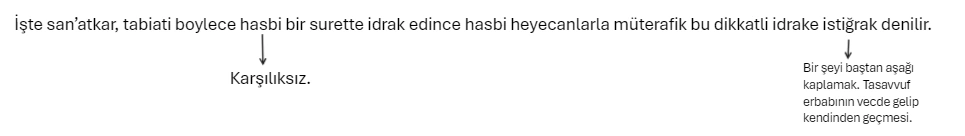
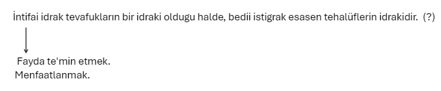
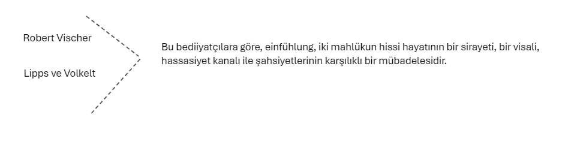
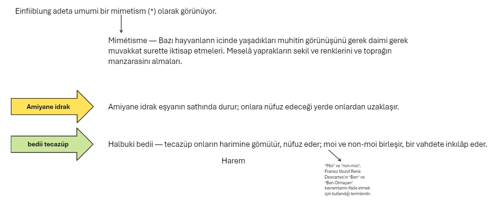
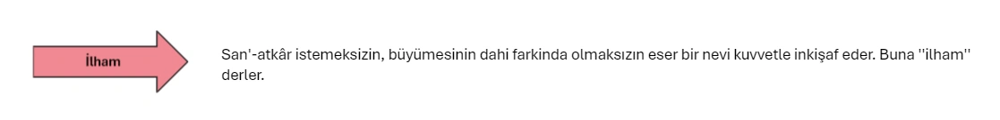
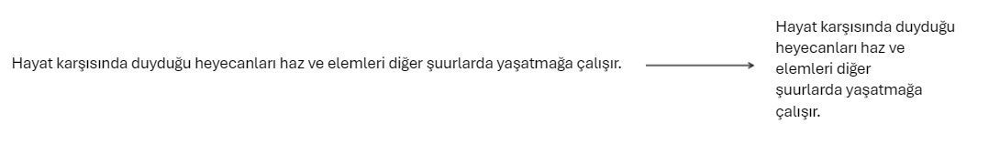
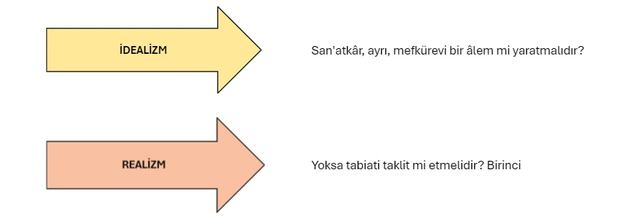
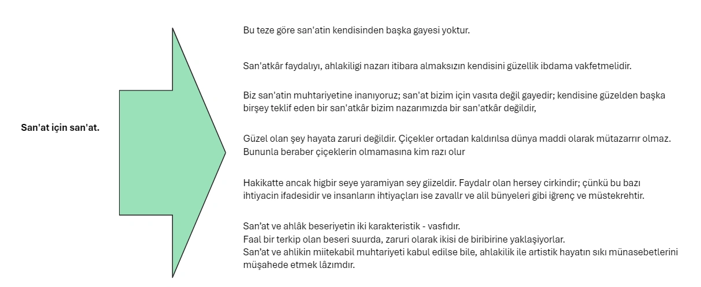

SAN'AT
İKİNCİ KISIM
San'atin tarifi. — San'at kelimesi en umumi manasile, marifetin amele tatbikını ifade eder.
Bacon'a nazaran san'at «tabiate ilâve olunmuş insan» dır.
Estetiğin mevzuunu bu ikinci manada aldığımız san'at, ve san'atin mevzuunu da güzel teşkil eder.
San'atkârda hasbi idrak. — İdrak tabii halde ise fayda gözeten (utilitaire) işe müteveccihtir.
İnsan tanımak için değil, faaliyette, harekette bulunmak için, fiillerile varlığının muhafazasını ve inkişafını temin için, uzviyetini tehdit eden tehlikelerden sakınmak için ve esaslı ihtiyaçlarını tatmin için idrak eder.
Bir mahlük, insan olsun hayvan olsun evvelâ kendisini ameli olarak ilgilendiren bir ihtiyacı, bir temayülü tatmin eden şeyi kavrar.
Halbuki, zamanın muhtelif anlarında ihtiyaç aynidir veya müşabihtir.
O ihtiyacı tatmin eden tek bir şey değil, fakat daima ayni sınıfa, ayni cinse mensup şeylerdir.
İdrak etmek ekseriya kendi kendimizle konuşmaktır.
San'atkâr tarafından kâinatın, batini âlemin hasbi idraki ise bambaşkadır.
Bergson'un dediği gibi san'atkârda«tabiat idraki ihtiyaca bağlamasını unutmuş» tur.
Tabiat asli safiyetinde, hayattan tecerrüt etmiş bir ruh tarafından idrak olunuyor.


Nihayet, intifai idrak sikica lisana bağlı oldugu halde bediî istigrak, lisandan derin bir surette ayridir.
Esyanin mevcudiyetini anlamak icin kendi kendime gene konusabilirim; fakat şairane ve mütehavvil nüanslardan zevk almak icin sözlere hiç te ihtiyaç hissetmem.
San'atkâr idrak ettiği mevcudat ve eşya ile tecazüp eder.
Tecazüp «sympathie», bir diğerinin neşelerine, ıstıraplarına, deruni hayatına iştirak etmek iktidarıdır.
Ana şefkati şüphesiz ki diğergâmlığın iptidai bir şekildir.
Tecazübün bedii istiğrakta esaslı bir rol oynadığı fikri bilhassa Alman romantizminde ve ona bağlı olan Eğnfühlung mektebi denilen mektepte geliştirilmiştir.
Sorbonne Profesorlerinden Victor Basch tarafından fransızcaya, auto-projection ve infusion kelimelerile tercüme edilen bu almanca tabiri, türkçeye bediî hülül kelimelerile çevirebiliriz.
EinfiihJung, harict eşyada kendimizi kaybetmek, onlarla birleşmek, kaynaşmak filidir.
San'atkâr, sahsi hayatile eşyayı canlandırır ve eşya ile temasında kendisi de canlanır. Bu, nefsin ve şeyin — imtizacıdır.

Bedii hayat âlemşumul bir tenasühtür:
Bir dramın şahısları mevzuubahs ise ani, bilâvasıta, hayvanlar ve eşya mevzuubahs ise daha ziyade timsali olarak tahakkuk eder.
Böylece, bir sütunun yükselen şekli karşısında kendimizi dimdik, ve kırık, alçak bir ' sütun karşısında kendimizi ezik, bir umman karşısında isyankâr, bir ırmak karşısında müşfik buluruz.

İnsan herşeyden evvel tehlikeleri bertaraf, esaslı ihtiyaçlarını temin ve uzviyetinin idamesini tatmin etmekle meşguldür.
O zaman, her şeyin derin kardeşliğini duymaktan mütevellit göz kamaştırıcı bir neşeye kendimizi terkederiz.
İşte bu bedii istiğrakın en yüksek şeklidir.
SAN'ATKÂRIN TAHAYYÜLÜ
San'atkâr tabiat ve insanlık karşısında hasbi heyecanlar duyar.
Yaratıcı denilen hakiki muhayyile, maziden alınan unsurların yardimile yeni suur halleri yaratmak iktidaridir
Muhayyile hicbir zaman yoktan yaratmaz. Higbir zaman kat'- iyyen yeni haletler meydana getirmez.
Yaratıcı muhayyile hakikati halde yaratıcı degil terkip edicidir.
Teheyyüci bir bağla birleşen bu hayal kafilesine tahayyül denilir.
San’atkar evvela bir tahayyülperverdir.
Tahayyül hissî bir temin etrafında teşekkül eder.
San'atkârın tahayyülü mevzu denilen seyin etrafinda toplanır.
Biraz sonra yaratıcı fantazinin nasıl teemmüllü çalışmağa refakat ettiğini göreceğiz.
Ekseriya dahi bu faaliyetin büyük bir kısmı san'atkârın şuurunun dışında, gayri şuurunda cereyan eder.

Böylece hayatın bir anını mahvolup gitmekten kurtarir.
San'atkâr hulyasını yalnız kendisi için maddileştirmez, haricilestirmez, onu diğerlerine tebliğ etmegi ister.

SAN'AT ESERİNİN YARADILIŞI HAKKINDA NAZARİYELER

İdealisme göre san'atin gayesi tabiati kopya etmek değil fakat şe'ni âleme üstün olan bir mefküreyi ifade etmekten ibarettir. İdealism kadim bir telâkkidir.
Bu mesleğin en büyük mümessili Eflâtundur.
Demek san'atkârın gayesi «görünmiyen» i «idea» yı itade etmektir. Çünkü yalnız «idea» güzeldir. Mademki harict şeylerde bizi tesirinde bırakan «görünmiyen» dir, o halde «görünmiyen», harici şekillerden, engellerden, nekadar tecrit edilirse üzerimizde o kadar müessir olur.
Binnetice, mümkün olduğu kadar şekilleri gidermek, silmek yahut mümkün olduğu kadar (görünmiyen'i) daha şiddetle canlandıracak kadar maddeden ayırmak idealimizde esas kaide oluyor.
Çünkü çizgilere daha derin bir vuzuh vermek ancak onları sadeleştirmek ve tabiatteki lüzumsuz teferruattan kurtarmakla mümkündür. Bu telâkkiyi kadim musikide dahi buluruz. Bu musiki berrak olmağı düşünür, armoniden kaçar ve sade bir melodi ile insanın tabit hislerini mümkün olduğu nispette açıkça ifade eder.
Hulâsa tabiatte gördüğümüz çizgiler, renkler, şekiller daima ruhen temaşa ettiğimiz «ideaylara göre tashih edilir, düzeltilir, güzelleştirilir.
Klâsiklerin bütün eserleri güzeldir: «Raphael»in yapmış olduğu «madone» lar biribirinden güzeldir.
Realism.
— Realismin en tanınmış mümessili (Emile Zola) dır.
San'at dahi ilim gibi tecriibi olmalıdır; tabiati taklit etmeğe inhisar etmelidir.
Şüphesiz san'at realiteye dayanır; fakat realitenin taklidi değildir.
Tabiatin ancak kekelediği şeyi san'at açıkça söyler ve ona ! bağırarak: Iste söylemek istediğin şey budur! Der.
İnsan tabiati taklit ettiği zaman onu mefküreleştirir, üslüba sokar.
Her san'at eseri şeniyetten bazı hassaları alır, bazı hassaları tayyeder; daima tecrit ile tahvil ile hareket eder. Harici model, dahili bir modeldir.
(E. Zola) nın büyük romanlarr bile hakiki hayatin bir kopyast olmaktan ziyade bir tebdilidir. Zaten Zola bizzat «san'at, tabiatin bir mizaç adesesinden rü'yetidir» diyen meshur formülü ile miifrit realismden uzaklaşmıştır.
San'atkâr tahayyülünü, diğer insanlarda yaşatmak - için bir eser yaratıyor demıştık.
SAN'AT VE TELKİN
Nasıl yapıp ta okuyuculara, dinleyicilere, seyircilere tabiat karşısında duyduğu hasbi istiğrakı aşılamalıdır?
Bunu, onları fiil ve hareketten ayırarak ve intifat itiyatlardan sökerek yeni bir âleme götürmekle yapar. O yeni âlemde, benliğin ısrarlı tahakkümü diner. Birçok - bediiyatçılar bu hali Aypnose haletine, uykunun sakin başlangıcına benzetiyorlar.
«San'atin mevzuu, sabsiyetimizin faal yahut daha doğrusu mukavim'kudretlerini uyutmaktan ve bizi, böylece kendimize ilka olunan fikri vücude getirdiğimiz ve ifade edilen bis ile tecazüp hâsıl ettiğimiz tam bir mutavaat haline isal etmekten ibarettir»,
san’at, boyle telkinle faaliyet gostermelidir.
Telkin bir kimsenin diger birinde kasten bazı haletler uyandırmasına ve bu digerinin de o haletleri kabul ve gayriiradi tekrar etmesine derler.
Sar’atin usul ve etvarmda, uyku halini tevlit için alelâde miiracaat olunan usul ve etvar hafifletilmis, - inceltilmis ve bir nevi rubaniyete mazhar edilmis sekillerile müşahede olunur.»
O zaman, ipnotizmacının bütün telkinlerini kabul eder; kendisine telkin edilen hayalleri idrak sanir.
Mimarlık ve heykeltraşlık bize, yarattığı eserlerin müessir hareketsizliği ile ve bir nevi ritim ile «şekillerin tenasübü, ayni motiflerin tekerrürü idrak melekemizi ihtizaza getirir ve bizi gündelik hayatın itiyatlarından söker» tesir icra eder.
Resim, çizgilerin hareketsizliği ve renklerin parlaklıgile nazarı dikkatimize hâkim kesilir. Musiki de vezin «rythme» ve usul «meusure» ile dikkatimizi sabit noktalar arasındâ götürüp getirerek, ihsaslarımızın ve fikirlerimizin tabii cereyanını tatil eder.
Şiir ve nesir de bize, ritim ile tesir eder.
San'atlerin bir terkibi olan tiyatro ayni surette, telkinle icrayi tesir etmektedir. Sessizligi ve bazan karanlığı tesis ederek, bütün parazit tenbihleri imha eder ve saydigimiz usulleri kullanir: Dekorun hareketsizliği ve parlakligr, kostiimlerin şaşaası, jestlerin ahengi, musikinin ve sözün ritmi.
Ressam Théodre Roussean, «Tablo evveli dimagimizda yapılmış olmalıdır; ressam onu tuval üzerinde dogurtmuyor, onu gizliyen örtüleri sırasile kaldırıyor» diyordu.
Yaratma işi devam ettikçe, tasavvur değişir. Tasarlanmış eser, san'atkâr çalıştıkça — tebeddül eder.
Alain’in yaptığı gibi «Pratiğin, san'atkârane faaliyetin esası olduğunu ve san'atkârda fikrin faydalı bir surette ilk fırça, kalem, çekiç darbesinde: evvel müdahale etmediğini» iddia etmek çok mubalâğalıdır.
Hulâsa, san'atkâr başlamadan evvel, eserinin birçok ha yallere genişletilebilen bir dinamik şemasına maliktir. Dinamik şema denilen bu canlı intiba ve teessür, yaratılacak eserin adeta bir nevi tekessüf etmiş hulâsasıdır. San'atkârın yaratacağı müstakbel eser, şema denilen ve birçok hayallere tevsi edilebilen bu küldedir. San'atkâr, işte böyle bir şemadan, bir taslaktan hareket ederek, bunu tahakkuk ve tecessüt ettirecek hatıralara iner.
Şu halde ibda cehti evvelâ defaten bir faraziyeye mülhem olmakla başlayıp, faraziyenin tahkik ve tahakkuku sonra gelir.
Binaenaleyh ibda cehti atlanılan fasılayı doldurmak ve gayeyi tahakkuk ettirecek vasıtaların bütün kısımlarını ve teferruatını bulmak için yapılan bir teşebbüstür, ve ibda bilkuvve zengin olan bu müceret taslağı müşahhas şeylere kalbetmekten ibarettir.
Romancı, şair, musikişinas v. s... bütün yaratıcıların hareket noktaları bu pek mücerret tasavvurdadır.
Bu mücadele için san'atkârin mücehhez olması lâzımdır.
San'atkâr ifade etmek istediği hisleri, fikirleri ve hayalleri orijinal bir “kalıba akıtmağa muvaffak olunca bir üslüp sahibi olur.
«Şekil ve onun ihtiva ettigi'sey biribirinden ayrı olarak bedii vasfı ibraz edemez; (çünkü onlara bedii bir mahiyet veren hakikatte yalniz ikisinin biribirine olan miinasebeti yani vahdetidir
San'at güzelliği, esas ve şeklin, his ve hayalin kaynaşmasından hasıl olmuştur.
Bütün bu misaller de gösteriyor ki esas (fond) ve sekil (forme) güzelliğin ayrilmaz iki unsurudur. Şimdi san’atin bir tarifini yapabiliriz:
San'at, şe'ni alemin yaninda, hayallerden ve hasbi hisslerden mürekkep ideal bir âlem yaratmak istiyen cehittir.
San'at yalnız bir eğlence değildir. O, bir firar vasıtasıdır. Bazan, manasız, sıkıcı görünen hayattan firar vasıtası. San'-atkar, banal hayattan ibda ile, amator de bedii haz ile uzaklaşır.
Muhayyile, şeniyete hayali karşı getirir: san'at, temenni ettiğimiz güzel, tatlı rüyaları ruhumuza serperek bizi şeniyetten ayırır.
San'at, bir teselli, bir kurtuluş, bir âzattır. Schopenhaner'e göre hayatın çölünde bağrı, doymuyan bir susuzlukla yanan, inliyen seyyaha san'at bir vahadır.
San'at, insanı yalnız müphem sıkıntıdan ve bariz ıstıraptan kurtarmakla kalmaz; tükenmek bilmiyen bir neşe ve şetaret bolluğu getirir, getirebilir.
San'at bizi hasbi idrake alıştırarak hodbinlik çemberlerinden varlığımızı kurtarır ve ruhumuzda bir nevi diğergâmlık: tesis eder.
San'at bize güzel bir surette nasil yaşamak lâzımgeldiğini öğretir ve yaşamağa bir mana verir.
Dar benliğimize, büyük san'atkârların his ve fikirlerini aşılıyarak benliğimizi genişletir, tabiati ve insanları sevdirir.
San'at bir cemiyet içerisinde doğmuştur. San'atkâr yalnız harici âlemi tasavvur ettiği zaman batıni hayatını ifade etmez; kendi ferdiyetini ifade ettiği zaman bile ictimai hayatı ifade eder.
Çünkü san'atkâr her insan gibi cemiyetin bir zerresidir. Böylece, san'atin telkin ettiği heyecanlar zaruri olarak içtimat bir karakter iktisap eder.
Fakat birkaç sene sonra bu mücadele diner, ahenk teessüs ve zihni yakınlaşma tahakkuk eder.
San'at ayırmaktan ziyade yaklaştırır; o kudretli bir surette en küçüğünden en büyüğüne kadar müteaddit ictimal grup azalarını birleştiren kuvvetlerden birisidir.
san'at eseri mensup olduğu milletin damgasını taşır.
san'at ayni vatanın fertlerini biribirine yaklaştırmakla iktifa etmez, tesiri hudutları geçer. '
Hakiki kültür milli olmaktan ziyade beseridir.
Hasbi karakteri itibarile, daima az çok amele tevcih edilmiş olan alelâde lisanlara üstündür.
Milli lisanlara da beynelmilel karakteri itibarile faiktir.
Auguste Comte'ın dediği gibi, san'at «Bütün nevimizde umumiyetle anlaşılan yegâne lisan parçasıdır).
Auguste Comte san'atte hakiki alemşümul lisanı görüyor.
SAN'AT VE AHLÂK
San'atin ahlâk ile olan münasebeti meselesi birçok defalar münakaşa edilmiştir. Ahlâki san'at tezine «san'at san'at içindir» tezi mukabele eder.
Ahlâki san'at. — En muhtelif devirlerde bazı mütefekkirler, san'atin ahlâka tâbi olması lâzımgeldiğini iddia ve müdafaa etmişlerdir. Eflâtun, Kanunlar'ında, şaire devlete yaramıyan her şeyden sakınmasını emir ve «musique purey ü menediyor; yalnız resmi olarak kabul edilmiş olan terennümleri kabul ediyor.
Musiki, Eflâtun'a göre «devletin kalesi» olmalıdır.
Aristo, «Siyaset» inde dahi yalnız ahlaki bir musiki kabul ediyor. Ve dramatik san'ate gaye olarak, «ihtirasların temizlenmesiyni gösteriyor.
Eğer «Ayni devrin bütün insanlarında müşterek, hayır ve şerre müteallik dini hissin> iyi olduğuna hükmettiği hisleri naklediyorsa san'at iyidir.
«Alemşümul san'at, sabit ve emin batıni bir kıstasa maliktir: dini vicdan».
Muasır san'atin şehvani aşkına, tafrafurusluk — ibdama, sun't karakterine ve dini derinliğin yokluğuna serzenişte bulunuyor.
şayanı tenkittir.
tenkidi celbeder.
Munhasıran ahlâki bir san'at telâkkisi, gayri ahlâki olmamakla beraber ahlâkla hiçbir münasebeti olmıyan birçok mevzuu tayyediyor.
Doğrudan doğruya ahlaki fikirler vazetmeği istihdaf eden san'at eserleri ekseriya esef verici bir bedii süfliyete maliktir.
Dini kantikler, resmi kantatlar, fazilete kasideler, faziletin mükâfatlandırıldığını ve reziletin mücazatlandırıldığını gösteren romanlar, umumiyetle acınacak bir adilik ar- | zetmektedir. Ahlaki san'atin bu aşağılığı nereden geliyor? Ekseriya samimi olmadığındandır. Bu gibi eserleri meydana getirenler mevki ve para hırsile …
